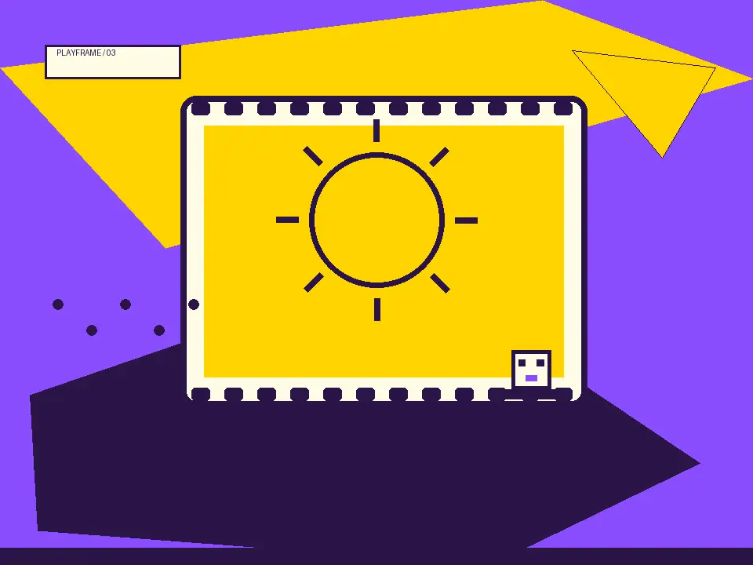
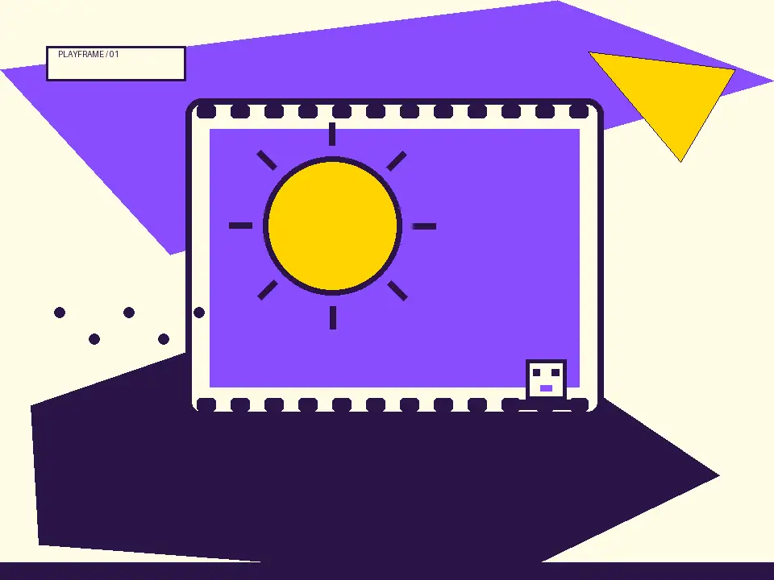
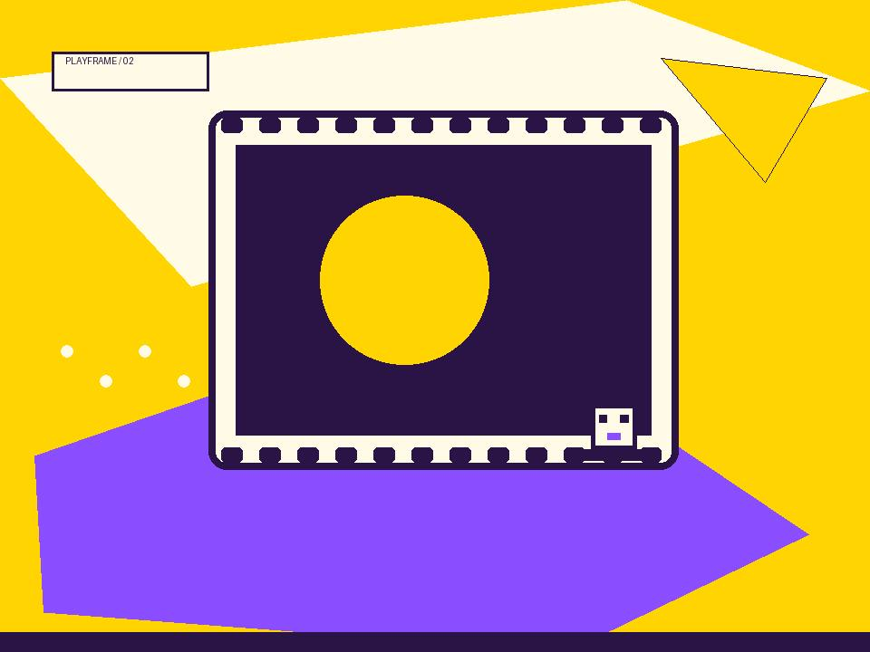
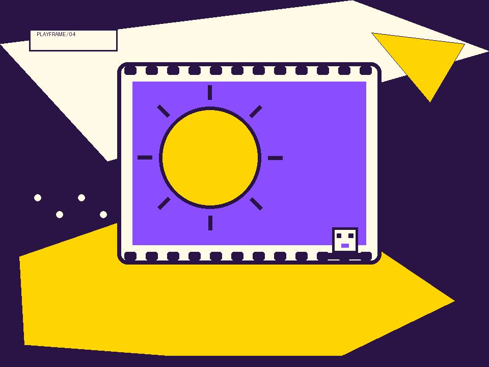

Samstag, 16.10.
Eröffnung, erste Kurzfilme und ein Blick hinter die Kulissen unabhängiger Games.
Samstag entdecken
Das Kurzfilmfestival für Gamer:innen
Zwei Tage, an denen Film auf Spielkultur trifft: PLAYFRAME zeigt Kurzfilme über fantastische Welten, echte Gefühle und die Menschen hinter dem Controller. Für Gamer:innen, Neugierige und alle, die Geschichten gern selbst entdecken.

Games erzählen längst Geschichten, die weit über den Bildschirm hinausreichen. PLAYFRAME macht Platz für Kurzfilme, die diese Energie aufnehmen: mit Welten zum Abtauchen, Figuren zum Mitfiebern und Ideen, die noch lange nach dem Abspann weiterlaufen. Hier begegnen sich filmische Bilder und die Kultur des Spielens auf Augenhöhe.
Unser Festival ist kein Wettbewerb darum, wer den höchsten Score hat. Es ist ein gemeinsamer Spielstand: Du kannst Filme entdecken, mit Filmschaffenden sprechen, Controller ausprobieren und andere Gamer:innen treffen. Ob du jeden Indie-Titel kennst oder gerade erst anfängst, dich für Games zu interessieren – dein Platz im Publikum ist schon reserviert.
In drei kuratierten Programmen zeigen wir Animation, dokumentarische Miniaturen und fiktionale Kurzfilme. Dazwischen gibt es Pausen, offene Spielstationen und Gespräche ohne Gatekeeping. Wir feiern kreative Umwege, mutige Prototypen und Geschichten, die sonst vielleicht in einem Ordner namens „final_final_7“ liegen bleiben würden.

STILL 04 / 12Mehr als nur zuschauen
PLAYFRAME ist ein Festival zum Entdecken und Austauschen. Nach jedem Block bleibt Zeit, Eindrücke zu teilen oder die gezeigten Ideen an einer Spielstation weiterzudenken. Die Filme sind kurz, die Gespräche dürfen länger sein.
Unsere Idee kennenlernen02 / Dein Festival-Wochenende
Eröffnung, erste Kurzfilme und ein Blick hinter die Kulissen unabhängiger Games.
Samstag entdecken
Neue Perspektiven, ein gemeinsamer Abschluss und Zeit für deinen persönlichen Abspann.
Sonntag entdecken
Ein Festival für Neugier
Bei PLAYFRAME darfst du genau diese Frage mit ins Gespräch nehmen.
Dein Spielstand wartet
Hol dir deinen Festival-Pass und triff uns im Oktober in Hamburg.